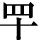

史记卷一
五帝本纪第一
黄帝 者，少典 之子，姓公孙 ，名曰轩辕 。生而神灵，弱而能言，幼而徇齐，长而敦敏，成而聪明。
轩辕 之时，神农氏 世衰。诸侯相侵伐，暴虐百姓，而神农氏 弗能征。于是轩辕 乃习用干戈，以征不享，诸侯咸来宾从。而蚩尤 最为暴，莫能伐。炎帝 欲侵陵诸侯，诸侯咸归轩辕 。轩辕 乃修德振兵，治五气，蓺五种，抚万民，度四方，教熊罴貔貅䝙虎，以与炎帝 战于阪泉 之野。三战，然后得其志。蚩尤 作乱，不用帝命。于是黄帝 乃征师诸侯，与蚩尤 战于涿鹿 之野，遂禽杀蚩尤 。而诸侯咸尊轩辕 为天子，代神农氏 ，是为黄帝 。天下有不顺者，黄帝 从而征之，平者去之，披山通道，未尝宁居。
东至于海，登丸山 ，及岱宗 。西至于空桐 ，登鸡头 。南至于江 ，登熊 、湘 。北逐荤粥 ，合符釜山 ，而邑于涿鹿 之阿。迁徙往来无常处，以师兵为营卫。官名皆以云命，为云师。置左右大监，监于万国。万国和，而鬼神山川封禅与为多焉。获宝鼎，迎日推䇲。举风后 、力牧 、常先 、大鸿 以治民。顺天地之纪，幽明之占，死生之说，存亡之难。时播百谷草木，淳化鸟兽虫蛾，旁罗日月星辰水波土石金玉，劳勤心力耳目，节用水火材物。有土德之瑞，故号黄帝 。
黄帝 二十五子，其得姓者十四人。
黄帝
居轩辕之丘
，而娶于西陵
之女，是为嫘祖
。嫘祖
为黄帝
正妃，生二子，其后皆有天下：其一曰玄嚣
，是为青阳
，青阳
降居江水
；其二曰昌意
，降居若水
。昌意
娶蜀山氏
女，曰昌仆
，生高阳
，高阳
有圣德焉。黄帝
崩，葬桥山
。其孙昌意
之子高阳
立，是为帝颛顼
也。
帝颛顼高阳 者，黄帝 之孙而昌意 之子也。静渊以有谋，疏通而知事；养材以任地，载时以象天，依鬼神以制义，治气以教化，絜诚以祭祀。北至于幽陵 ，南至于交阯 ，西至于流沙 ，东至于蟠木 。动静之物，大小之神，日 月所照，莫不砥属。
帝颛顼
生子曰穷蝉
。颛顼
崩，而玄嚣
之孙高辛
立，是为帝喾
。
帝喾高辛
者，黄帝
之曾孙也。高辛
父曰 极
，
极
父曰玄嚣
，玄嚣
父曰黄帝
。自玄嚣
与
极
皆不得在位，至高辛
即帝位。高辛
于颛顼
为族子。
极
，
极
父曰玄嚣
，玄嚣
父曰黄帝
。自玄嚣
与
极
皆不得在位，至高辛
即帝位。高辛
于颛顼
为族子。
高辛 生而神灵，自言其名。普施利物，不于其身。聪以知远，明以察微。顺天之义，知民之急。仁而威，惠而信，修身而天下服。取地之财而节用之，抚教万民而利诲之，历日月而迎送之，明鬼神而敬事之。其色郁郁，其德嶷嶷。其动也时，其服也士。帝喾 溉执中而遍天下，日月所照，风雨所至，莫不从服。
帝喾
娶陈锋氏
女，生放勋
。娶娵訾氏
女，生挚
。帝喾
崩，而挚
代立。帝挚
立，不善（崩），而弟放勋
立，是为帝尧
。
帝尧 者，放勋 。其仁如天，其知如神。就之如日，望之如云。富而不骄，贵而不舒。黄收纯衣，彤车乘白马，能明驯德，以亲九族。九族既睦，便章百姓。百姓昭明，合和万国。
乃命羲 、和 ，敬顺昊天，数法日月星辰，敬授民时。分命羲仲 ，居郁夷 ，曰旸谷 。敬道日出，便程东作。日中，星鸟 ，以殷中春。其民析，鸟兽字微。申命羲叔 ，居南交 。便程南为，敬致。日永，星火 ，以正中夏。其民因，鸟兽希革。申命和仲 ，居西土，曰昧谷 。敬道日入，便程西成。夜中，星虚 ，以正中秋。其民夷易，鸟兽毛毨。申命和叔 ，居北方，曰幽都 。便在伏物。日短，星昴 ，以正中冬。其民燠，鸟兽氄毛。岁三百六十六日，以闰月正四时。信饬百官，众功皆兴。
尧
曰：“谁可顺此事？”放齐
曰：“嗣子丹朱
开明。”尧
曰：“吁！顽凶，不用。”尧
又曰：“谁可者？” 兜
曰：“共工
旁聚布功，可用。”尧
曰：“共工
善言，其用僻，似恭漫天，不可。”尧
又曰：“嗟，四岳，汤汤洪水滔天，浩浩怀山襄陵，下民其忧，有能使治者？”皆曰鲧
可。尧
曰：“鲧
负命毁族，不可。”岳曰：“异哉，试不可用而已。”尧
于是听岳用鲧
。九岁，功用不成。
兜
曰：“共工
旁聚布功，可用。”尧
曰：“共工
善言，其用僻，似恭漫天，不可。”尧
又曰：“嗟，四岳，汤汤洪水滔天，浩浩怀山襄陵，下民其忧，有能使治者？”皆曰鲧
可。尧
曰：“鲧
负命毁族，不可。”岳曰：“异哉，试不可用而已。”尧
于是听岳用鲧
。九岁，功用不成。
尧 曰：“嗟！四岳：朕在位七十载，汝能庸命，践朕位？”岳应曰：“鄙德忝帝位。”尧 曰：“悉举贵戚及疏远隐匿者。”众皆言于尧 曰：“有矜在民间，曰虞舜 。”尧 曰：“然，朕闻之。其何如？”岳曰：“盲者子。父顽，母嚚，弟傲，能和以孝，烝烝治，不至奸。”尧 曰：“吾其试哉。”于是尧 妻之二女，观其德于二女。舜 饬下二女于妫汭 ，如妇礼。尧 善之，乃使舜 慎和五典，五典能 从。乃遍入百官，百官时序。宾于四门，四门穆穆，诸侯远方宾客皆敬。尧 使舜 入山林川泽，暴风雷雨，舜 行不迷。尧 以为圣，召舜 曰：“女谋事至而言可绩，三年矣。女登帝位。”舜 让于德不怿。正月上日，舜 受终于文祖 。文祖 者，尧 大祖也。
于是帝尧 老，命舜 摄行天子之政，以观天命。舜 乃在璇玑玉衡，以齐七政。遂类于上帝，禋于六宗，望于山川，辩于群神。揖五瑞，择吉月日，见四岳诸牧，班瑞。岁二月，东巡狩，至于岱宗 ，祡，望秩于山川。遂见东方君长，合时月正日，同律度量衡，修五礼五玉三帛二生一死为挚，如五器，卒乃复。五月，南巡狩；八月，西巡狩；十一月，北巡狩：皆如初。归，至于祖祢庙，用特牛礼。五岁一巡狩，群后四朝。遍告以言，明试以功，车服以庸。肇十有二州，决川。象以典刑，流宥五刑，鞭作官刑，扑作教刑，金作赎刑。眚灾过，赦；怙终贼，刑。钦哉，钦哉，惟刑之静哉！
兜
进言共工
，尧
曰不可而试之工师，共工
果淫辟。四岳举鲧
治鸿水，尧
以为不可，岳强请试之，试之而无功，故百姓不便。三苗
在江淮
、荆州
数为乱。于是舜
归而言于帝，请流共工
于幽陵
，以变北狄
；放 兜
于崇山
，以变南蛮
；迁三苗
于三危
，以变西戎
；殛鲧
于羽山
，以变东夷
：四罪而天下咸服。
兜
于崇山
，以变南蛮
；迁三苗
于三危
，以变西戎
；殛鲧
于羽山
，以变东夷
：四罪而天下咸服。
尧
立七十年得舜
，二十年而老，令舜
摄行天子之政，荐之于天。尧
辟位凡二十八年而崩。百姓悲哀，如丧父母。三年，四方莫举乐，以思尧
。尧
知子丹朱
之不肖，不足授天下，于是乃权授舜
。授舜
，则天下得其利而丹朱
病；授丹朱
，则天下病而丹朱
得其利。尧
曰“终不以天下之病而利一人”，而卒授舜
以天下。尧
崩，三年之丧毕，舜
让辟丹朱
于南河
之南。诸侯朝觐者不之丹朱
而之舜
，狱讼者不之丹朱
而之舜
，讴歌者不讴歌丹朱
而讴歌舜
。舜
曰“天也”，夫而后之中国践天子位焉，是为帝舜
。
虞舜 者，名曰重华 。重华 父曰瞽叟 ，瞽叟 父曰桥牛 ，桥牛 父曰句望 ，句望 父曰敬康 ，敬康 父曰穷蝉 ，穷蝉 父曰帝颛顼 ，颛顼 父曰昌意 ：以至舜 七世矣。自从穷蝉 以至帝舜 ，皆微为庶人。
舜 父瞽叟 盲，而舜 母死，瞽叟 更娶妻而生象 ，象 傲。瞽叟 爱后妻子，常欲杀舜 ，舜 避逃；及有小过，则受罪。顺事父及后母与弟，日以笃谨，匪有解。
舜 ，冀州 之人也。舜 耕历山 ，渔雷泽 ，陶河 滨，作什器于寿丘 ，就时于负夏 。舜 父瞽叟 顽，母嚚，弟象 傲，皆欲杀舜 。舜 顺适不失子道，兄弟孝 慈。欲杀，不可得；即求，尝在侧。
舜 年二十以孝闻。三十而帝尧 问可用者，四岳咸荐虞舜 ，曰可。于是尧 乃以二女妻舜 以观其内，使九男与处以观其外。舜 居妫汭 ，内行弥谨。尧 二女不敢以贵骄事舜 亲戚，甚有妇道。尧 九男皆益笃。舜 耕历山 ，历山 之人皆让畔；渔雷泽 ，雷泽 上人皆让居；陶河 滨，河 滨器皆不苦窳。一年而所居成聚，二年成邑，三年成都。尧 乃赐舜  衣，与琴，为筑仓廪，予牛羊。瞽叟 尚复欲杀之，使舜 上涂廪，瞽叟 从下纵火焚廪。舜 乃以两笠自扞而下，去，得不死。后瞽叟 又使舜 穿井，舜 穿井为匿空旁出。舜 既入深，瞽叟 与象 共下土实井，舜 从匿空出，去。瞽叟 、象 喜，以舜 为已死。象 曰：“本谋者象 。”象 与其父母分，于是曰：“舜 妻尧 二女，与琴，象 取之。牛羊仓廪予父母。”象 乃止舜 宫居，鼓其琴。舜 往见之。象 鄂不怿，曰：“我思舜 正郁陶！”舜 曰：“然，尔其庶矣！”舜 复事瞽叟 爱弟弥谨。于是尧 乃试舜 五典百官，皆治。
昔高阳氏 有才子八人，世得其利，谓之“八恺”。高辛氏 有才子八人，世谓之“八元”。此十六族者，世济其美，不陨其名。至于尧 ，尧 未能举。舜 举八恺，使主后土，以揆百事，莫不时序。举八元，使布五教于四方，父义，母慈，兄友，弟恭，子孝，内平外成。
昔帝鸿氏 有不才子，掩义隐贼，好行凶慝，天下谓之浑沌 。少暤氏 有不才子，毁信恶忠，崇饰恶言，天下谓之穷奇 。颛顼氏 有不才子，不可教训，不知话言，天下谓之祷杌 。此三族世忧之。至于尧 ，尧 未能去。缙云氏 有不才子，贪于饮食，冒于货贿，天下谓之饕餮 。天下恶之，比之三凶。舜 宾于四门，乃流四凶族，迁于四裔，以御螭魅，于是四门辟，言毋凶人也。
舜 入于大麓，烈风雷雨不迷，尧 乃知舜 之足授天下。尧 老，使舜 摄行天子政，巡狩。舜 得举用事二十年，而尧 使摄政。摄政八年而尧 崩。三年丧毕，让丹朱 ，天下归舜 。而禹 、皋陶 、契 、后稷 、伯夷 、夔 、龙 、倕 、益 、彭祖 自尧 时而皆举用，未有分职。于是舜 乃至于文祖 ，谋于四岳，辟四门，明通四方耳目，命十二牧论帝德，行厚德，远佞人，则蛮夷率服。舜 谓四岳曰：“有能奋庸美尧 之事者，使居官相事？”皆曰：“伯禹 为司空，可美帝功。”舜 曰：“嗟，然！禹 ，汝平水土，维是勉哉。”禹 拜稽首，让于稷 、契 与皋陶 。舜 曰：“然，往矣。”舜 曰：“弃 ，黎民始饥，汝后稷播时百谷。”舜 曰：“契 ，百姓不亲，五品不驯，汝为司徒，而敬敷五教，在宽。”舜 曰：“皋陶 ，蛮夷猾夏，寇贼奸轨，汝作士，五刑有服，五服三就；五流有度，五度三居：维明能信。”舜 曰：“谁能驯予工？”皆曰垂 可。于是以垂 为共工。舜 曰：“谁能驯予上下草 木鸟兽？”皆曰益 可。于是以益 为朕虞。益 拜稽首，让于诸臣朱虎 、熊罴 。舜 曰：“往矣，汝谐。”遂以朱虎 、熊罴 为佐。舜 曰：“嗟！四岳，有能典朕三礼？”皆曰伯夷 可。舜 曰：“嗟！伯夷 ，以汝为秩宗，夙夜维敬，直哉维静絜。”伯夷 让夔 、龙 。舜 曰：“然。以夔 为典乐，教稚子，直而温，宽而栗，刚而毋虐，简而毋傲；诗言意，歌长言，声依永，律和声，八音能谐，毋相夺伦，神人以和。”夔 曰：“於！予击石拊石，百兽率舞。”舜 曰：“龙 ，朕畏忌谗说殄伪，振惊朕众，命汝为纳言，夙夜出入朕命，惟信。”舜 曰：“嗟！女二十有二人，敬哉，惟时相天事。”三岁一考功，三考绌陟，远近众功咸兴。分北三苗 。
此二十二人咸成厥功：皋陶 为大理，平，民各伏得其实；伯夷 主礼，上下咸让；垂 主工师，百工致功；益 主虞，山泽辟；弃 主稷，百谷时茂；契 主司徒，百姓亲和；龙 主宾客，远人至；十二牧行而九州莫敢辟违；唯禹 之功为大，披九山，通九泽，决九河，定九州，各以其职来贡，不失厥宜。方五千里，至于荒服。南抚交阯 、北发 ，西戎 、析枝 、渠廋 、氐 、羌 ，北山戎 、发 、息慎 ，东长 、鸟夷 ，四海之内咸戴帝舜 之功。于是禹 乃兴九招 之乐，致异物，凤皇来翔。天下明德皆自虞帝 始。
舜
年二十以孝闻，年三十尧
举之，年五十摄行天子事，年五十八尧
崩，年六十一代尧
践帝位。践帝位三十九年，南巡狩，崩于苍梧
之野。葬于江
南九疑
，是为零陵
。舜
之践帝位，载天子旗，往朝父瞽叟
，夔夔唯谨，如子道。封弟象
为诸侯。舜
子商均
亦不肖，舜
乃豫荐禹
于天。十七年而崩。三年丧毕，禹
亦乃让舜
子，如舜
让尧
子。诸侯归之，然后禹
践天子位。尧
子丹朱
，舜
子商均
，皆有疆土，以奉先祀。服其服，礼乐如之。以客见天子，天子弗臣，示不敢专也。
自黄帝
至舜
、禹
，皆同姓而异其国号，以章明德。故黄帝
为有熊
，帝颛顼
为高阳
，帝喾
为高辛
，帝尧
为陶唐
，帝舜
为有虞
。帝禹
为夏后
而别氏，姓姒氏
。契
为商
，姓子氏
。弃
为周
，姓姬氏
。
太史公 曰：学者多称五帝 ，尚矣。然尚书 独载尧 以来；而百家言黄帝 ，其文不雅驯，荐绅先生难言之。孔子 所传宰予 问五帝德 及帝系姓 ，儒者或不传。余尝西至空桐 ，北过涿鹿 ，东渐于海，南浮江淮 矣，至长老皆各往往称黄帝 、尧 、舜 之处，风教固殊焉，总之不离古文者近是。予观春秋 、国语 ，其发明五帝德 、帝系姓 章矣，顾弟弗深考，其所表见皆不虚。书 缺有间矣， 其轶乃时时见于他说。非好学深思，心知其意，固难为浅见寡闻道也。余并论次，择其言尤雅者，故著为本纪书首。